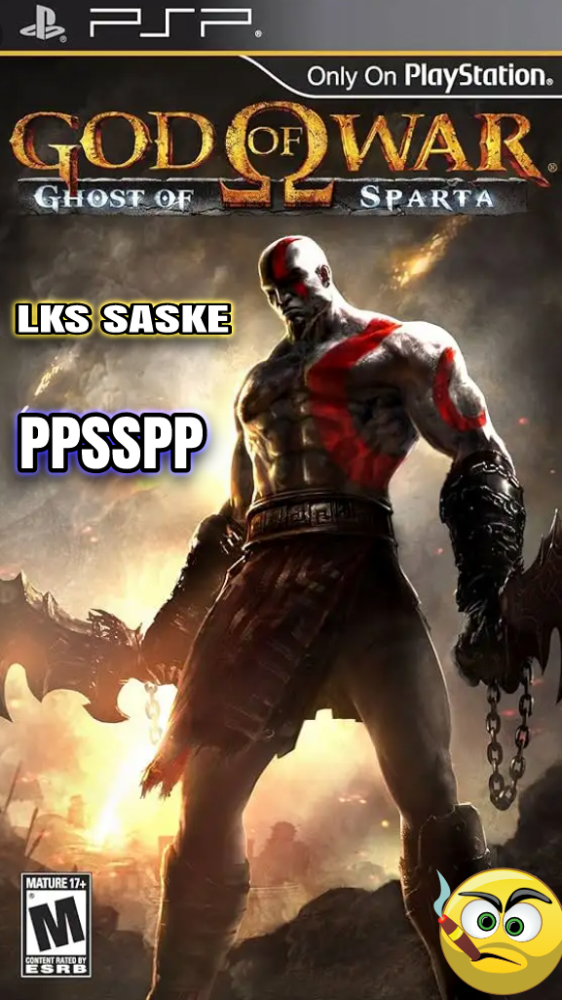

God of War: Ghost of Sparta is a popular action-adventure game developed by Ready at Dawn and Santa Monica Studio for the PlayStation Portable (PSP) console. The game was released in 2010 and is the sixth installment in the highly acclaimed God of War series. Ghost of Sparta is a prequel to the original God of War game and follows the story of Kratos, a former Spartan warrior who becomes the God of War.
The game takes place after the events of the original God of War game and follows Kratos as he embarks on a journey to find his brother, Deimos, who was taken by the God of Death, Thanatos. Along the way, Kratos must battle through hordes of enemies and mythical creatures as he uncovers the truth about his past and confronts his inner demons.
One of the standout features of God of War: Ghost of Sparta is its stunning graphics and impressive visuals. The game pushes the limits of the PSP hardware, delivering breathtaking cutscenes and epic battles that rival those found on home consoles. The attention to detail in the environments and character designs is truly impressive, making the world of Ghost of Sparta feel alive and immersive.
In terms of gameplay, Ghost of Sparta follows the same formula as its predecessors, with players controlling Kratos as he battles enemies using a combination of melee and ranged attacks. The game features a variety of weapons and magic abilities that can be upgraded throughout the game, allowing players to customize their playstyle and unleash devastating combos on their foes.
One of the standout features of Ghost of Sparta is the addition of new weapons and abilities that expand Kratos' arsenal. These include the Arms of Sparta, which allow Kratos to stun enemies with powerful javelin throws, and the Thera's Bane ability, which grants Kratos the power to unleash fiery attacks on his enemies. These new additions add depth and variety to the combat system, keeping the gameplay fresh and engaging throughout the game.

In addition to the combat, Ghost of Sparta also features puzzle-solving elements that require players to use their wits to progress through the game. These puzzles range from simple lever puzzles to complex environmental puzzles that require careful observation and experimentation to solve. The inclusion of these puzzles adds a layer of depth to the gameplay and helps break up the action-packed combat sequences.
The story of God of War: Ghost of Sparta is one of the game's strongest aspects, offering a deeper look into Kratos' past and exploring his relationship with his family. The game delves into Kratos' tragic backstory and the events that led him to become the ruthless warrior he is today, providing players with a more nuanced understanding of the character. The emotional depth of the story is complemented by strong voice acting and well-written dialogue, making the characters feel more relatable and human.
Overall, God of War: Ghost of Sparta is a must-play for fans of the series and action-adventure games in general. The game offers a compelling story, stunning visuals, and engaging gameplay that will keep players coming back for more. Whether you're a longtime fan of the God of War series or new to the franchise, Ghost of Sparta is sure to provide hours of thrilling entertainment on the go.
If you're interested in playing God of War: Ghost of Sparta on your PC, you can use the PPSSPP emulator to experience the game and all its glory. The emulator allows you to play PSP games on your computer with enhanced graphics and performance, giving you the opportunity to relive the epic adventures of Kratos in stunning detail. Simply download the emulator and the game ROM, and you'll be able to immerse yourself in the world of Ghost of Sparta in no time. Happy gaming!
.png)
.png)